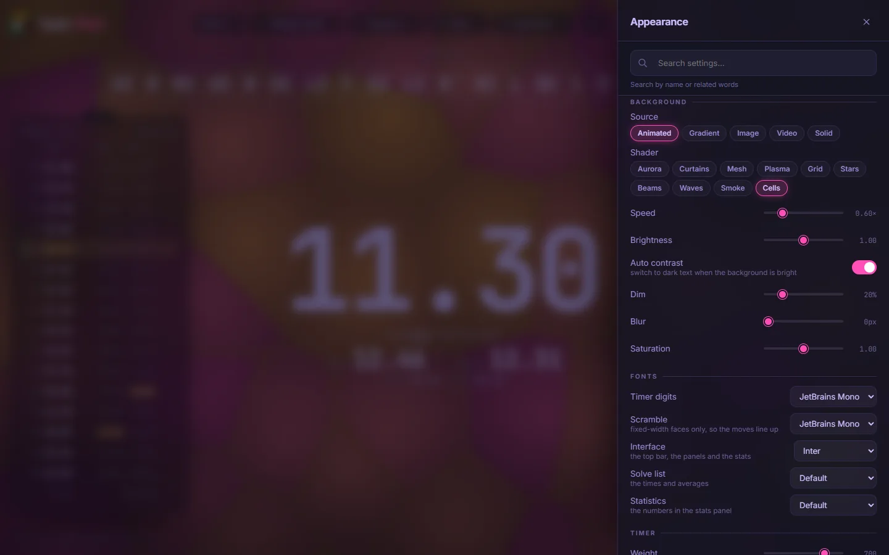
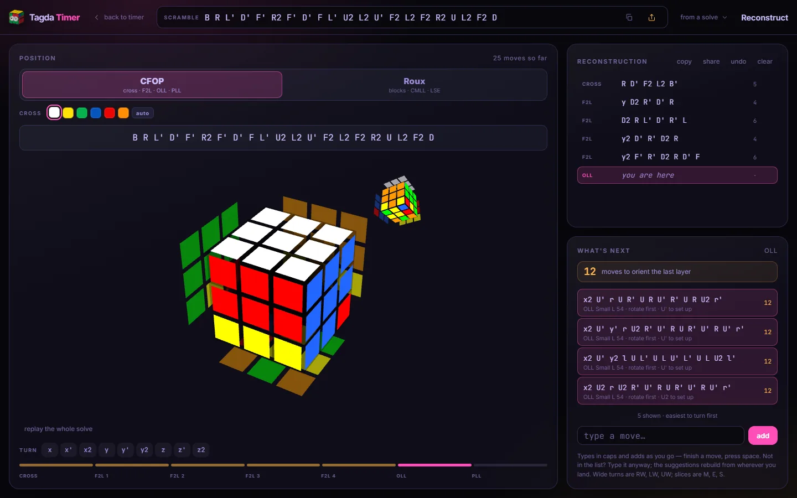

A Rubik's Cube timer you can make your own
Set up a practice space that feels right to you. Tagda Timer combines a customizable cube timer with Scramble of the Day, a solve reconstruction workbench and algorithm training.
Keep your session simple, or put the tools you use most within reach. Your times stay in your browser, and you can start solving without an account.
Start solvingMake the whole practice space yours
Tagda's customization reaches across the workspace. Change the timer font, size and glow, choose an accent colour, and adjust the size of the scramble and statistics.
Use an animated background, your own photo or a looping video. Drag panels into a side rail, dock them at the bottom, or leave them floating. Hide the ones you don't use.
For quieter practice, Zen mode leaves just the scramble and clock. You can also export your theme to share your setup.

Take on Scramble of the Day
Scramble of the Day gives everyone the same scramble for each event, with one leaderboard attempt per person. Submit your time to reveal the standings and see how your solve compares.
It's a reason to come back for a quick challenge between practice sessions. Sign in with Google to take part, then choose SOTD in the timer's top bar. The challenge resets at midnight India Standard Time.
Go back through the solve, move by move
Examine the choices you made during an attempt. Open a solve in the reconstruction workbench, enter your moves and explore suggestions for cross, F2L and the last layer.
Preview suggestions on the cube, compare routes and replay the reconstruction from its scramble. Save it with the solve so you can return to the same position later.
Press Y on desktop or choose Reconstruct this solve from a solve's menu. You enter the moves you made; suggestions help you explore what you could try next time.

Build a session around what you want to improve
Algorithm practice
Choose the cases you want to drill in the algorithm trainer. Practise OLL, PLL and other sets, with visual cases and scrambles for focused repetition.
Cross + 1
Work on the transition from cross to your first F2L pair with a dedicated training mode.
Sessions and statistics
Keep sessions for different events and goals. Follow your ao5 and ao12 averages, personal bests and longer-term progress.
Race rooms
Practise alongside friends on shared scrambles and compare results across rounds. Online races require sign-in.
Thinking of switching from csTimer?
Try Tagda Timer if you want more control over the look and arrangement of your practice space, a shared daily challenge, or reconstruction alongside your timer. You can explore those features before deciding where to keep your regular sessions.
To bring your history across, export your data from csTimer and import that file in Tagda Timer's Settings. The importer carries over session names, solve times, scrambles, comments and penalties. Keep your original export as a backup.
Can I use it offline?
After the app has loaded and cached, the timer and core practice tools work offline. Daily leaderboards, race rooms and cloud sync need a connection.
Do I need an account?
You can time solves and use the practice tools without signing in. Sign in with Google for cloud sync, Scramble of the Day and online races. Export backups of any solve history you want to keep.
How do I start a solve?
On a keyboard, hold Space and release to start. Press a key to stop. On a phone, hold and release the timer area, then tap to stop.